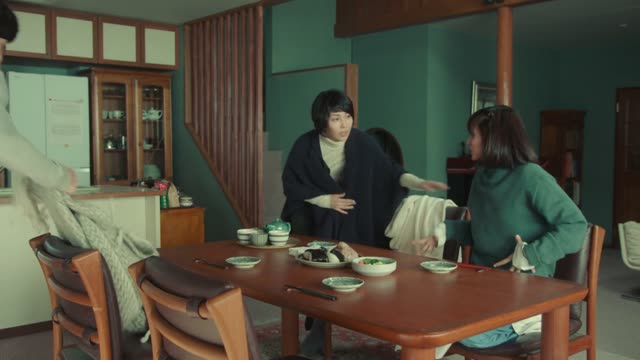
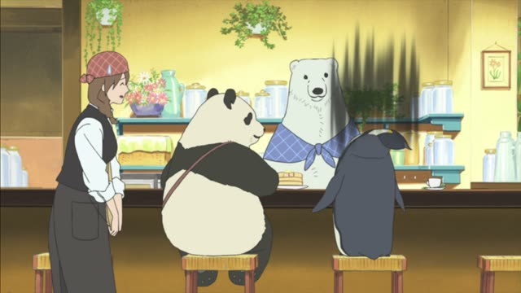
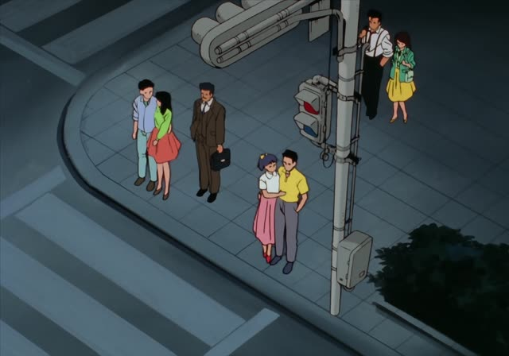
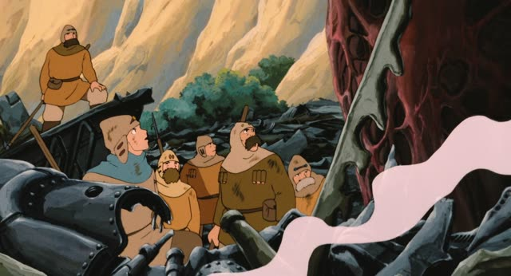

でも (Even)
The Wind Rises
近眼でも飛行機の設計はできますか？
"Can I design planes even if I'm nearsighted?"
でも right after a noun means "even X": X is the least likely case, and the rest still holds.
It takes the place of は, が or を (子供でも, not 子供がでも). It never changes: politeness comes from the end of the sentence.
On this card, the boy thinks bad eyes rule him out, so he asks if it works even for someone nearsighted.
Vinland Saga · Episode 7
小僧でも分かる。
"Even a kid could figure that out."
On this card, a kid is the least likely one to get it, so if even a kid gets it, everyone does.
Quick Examples
You show a friend a simple kanji.
この漢字は子供でも読めます。
"Even kids can read this kanji."
PoliteSomeone asks when your shop is closed.
日曜日でも働いています。
"We work even on Sundays."
PoliteA really hard homework question.
先生でも分からない。
"Even the teacher doesn't know."
CasualWith and without
子供も読めます。
"Kids can read it too." Just one more on the list.
子供でも読めます。
"Even kids can read it." Kids are the least likely, so it must be easy.
Examples from Media

Quartet · Episode 4
別府さんでも怒ることあるんですね。
"So even you get angry sometimes, Beppu-san."
He's the calm one, the last person you'd expect to get angry.
Kekkon Dekinai Otoko · Episode 10
別に一人でもできますよ。
"I can do it even on my own, you know."

Shirokuma Cafe · Episode 11
い…今からでも遅くないですよ。
"It's not too late, even now."
でも can follow a particle too: から + でも = "even from now".
Slam Dunk · Episode 100
全国でも必ずいい試合ができますよ。
"They'll play a good game for sure, even at Nationals."
Sakamoto Days · Episode 3
小学生でも言わないよ。
"[That lie is so bad] even a grade-schooler wouldn't say it."

Oishinbo · Episode 34
歌舞伎に疎い私でも知ってるわ。
"Even I know him, and I know nothing about kabuki."
Dungeon Meshi · Episode 23
これなら俺一人でも勝てる。
"Like this, I can win even on my own."

Nausicaä of the Valley of the Wind
あの炎でも燃えないとはなぁ。
"To think it won't burn even in that fire."